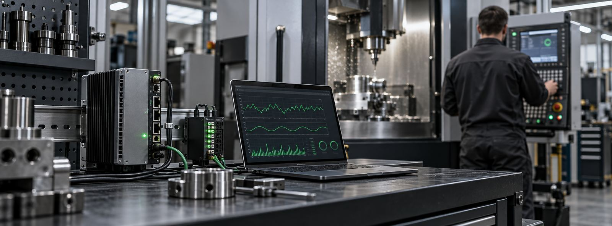

Mniej przestojów
Widzisz na bieżąco, które maszyny pracują, które stoją i dlaczego. Przestoje i alarmy przestają być domysłem, a stają się danymi.
Przemysł 4.0 · IIoT · Dolnośląskie i okolice
Cyfryzacja parku maszynowego bez kupowania drogiego systemu MES. Łączymy maszyny CNC z siecią zakładową, przekazujemy dane o ich pracy do Twoich systemów i zabezpieczamy sterowania kompletnymi kopiami zapasowymi.
Korzyści
Widzisz na bieżąco, które maszyny pracują, które stoją i dlaczego. Przestoje i alarmy przestają być domysłem, a stają się danymi.
Rzeczywiste wykorzystanie maszyn i dane do OEE pomagają planować produkcję, obsadę zmian i inwestycje w nowe maszyny.
Gdy sterowanie straci dane, maszynę przywraca się z kopii zapasowej, zamiast odtwarzać ją od zera i czekać na serwis producenta.
Przeszkolony zespół utrzymania ruchu szybciej diagnozuje usterki i bezpiecznie pracuje przy maszynach.
Usługi
Przesyłanie programów bez pendrive’ów, dostęp do maszyn z biura technologicznego i konfiguracja zgodna z zasadami działu IT. Pierwszy krok cyfryzacji produkcji.
Zbieranie danych z maszyn: czas pracy, postoje i alarmy. Dane do OEE i raportów trafiają do Twojego ERP, MES, bazy danych albo Excela.
Pełny backup sterowań Fanuc, Heidenhain i Siemens Sinumerik: parametry, PLC, programy, korektory i dane maszyny. Zakres wynika z typu sterowania.
Wycena z góryZabezpieczenie parametrów falowników i innych urządzeń w szafie sterowniczej. Liczba urządzeń różni się w każdej maszynie, dlatego zakres ustalamy po przeglądzie szafy.
Wycena po przeglądzieCzytanie schematów i dokumentacji elektrycznej, pneumatycznej i hydraulicznej, procedura LOTO oraz dobre praktyki utrzymania ruchu.
Przemysł 4.0 bez wielkiego budżetu
Monitoring produkcji nie musi zaczynać się od wdrożenia drogiej platformy. Wykorzystujemy to, co już działa w Twojej firmie.

Gotowe narzędzia
Wdrażamy sprawdzone narzędzia CNC.exe, więc nie płacisz za tworzenie rozwiązania od zera. Działają lokalnie, w Twojej sieci.
Backup sterowań i przesyłanie programów między biurem a maszyną.
Ekran sterowania i stan maszyny bez chodzenia na halę.
Odczyt sygnałów PLC i wymiana danych z systemami zakładu.
Szybkie wykrywanie problemów z komunikacją maszyn.
Instrukcje i materiały dla operatorów i utrzymania ruchu.
Współpraca
Każdy etap to osobne zlecenie z własną ofertą, zakończone raportem i rozliczeniem. O kolejnym kroku decydujesz po zapoznaniu się z wynikami.
Krótki, płatny przegląd maszyn, sterowań i sieci zakładowej. Bez integracji i bez wykonywania backupów: ustalamy, co jest potrzebne i w jakim zakresie.
Efekt: raport z audytuRazem z produkcją i utrzymaniem ruchu planujemy przestoje i dostępność maszyn, żeby prace nie kolidowały z planem produkcji.
Efekt: plan przestojówPrace dzielimy na etapy z konkretnymi terminami, na przykład maszyna po maszynie albo hala po hali.
Efekt: oferta na każdy etapWłaściwa faza prac: podłączenie i integracja maszyn albo kopie zapasowe sterowań i komponentów szafy.
Efekt: raport z etapuZakres i koszt znasz przed rozpoczęciem każdego etapu.
Każdy etap kończy się raportem z wykonanych prac i wniosków.
Zakończony etap jest rozliczany osobno, niezależnie od decyzji o kolejnych etapach.
FAQ
Nie. Dane z maszyn przekazujemy do systemów, które już działają w Twojej firmie: ERP, MES, bazy danych albo arkusza Excel.
Backup sterowania wyceniamy z góry, na podstawie typu sterowania (Fanuc, Heidenhain, Siemens Sinumerik). Backup falowników i innych komponentów szafy wyceniamy osobno, po przeglądzie, bo ich liczba różni się w każdej maszynie.
Utrata danych w sterowaniu, na przykład po rozładowaniu baterii, awarii karty pamięci lub dysku, może na długo zatrzymać maszynę. Kompletna kopia pozwala przywrócić parametry, PLC i programy i szybciej wrócić do produkcji.
W Twojej firmie: na Twoich serwerach i w Twojej sieci, zgodnie z zasadami działu IT.
W województwie dolnośląskim i okolicach, między innymi we Wrocławiu, Wałbrzychu, Legnicy, Świdnicy i Strzelinie.
Na zgłoszenia z formularza odpowiadamy w ciągu 24 godzin.
Kontakt
Napisz, ile masz maszyn i jakie sterowania. Odpowiemy w ciągu 24 godzin i zaproponujemy zakres audytu.
CNC.exe Jakub Jasiński